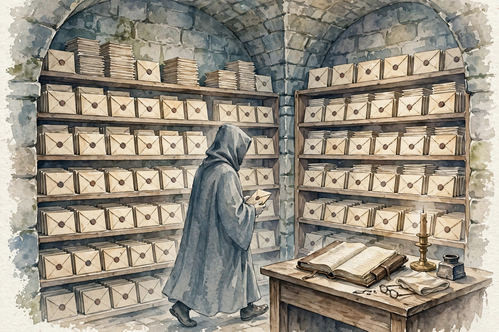

Outer layer Claim
Start here
Companion · AWS AIP-C01 study guide · Unit 10

Watercolor: The card catalog. Original AI watercolor illustration made for this page.
- The card catalog
Mechanism
Companion · AWS AIP-C01 study guide · Unit 10
Two hundred domain questions, 52 bonus questions, and 8 field-research questions, plus a full mock. This companion narrates the bank by family, trap, and reason pattern. It does not copy the bank.
Source volume-question-bank.html and its study file, AWS AIP-C01 study guideForm thematic narrative companion with lesson tags and charts
SOURCE / INTERPRETATION: HOW TO READ THE TAGS
From the lesson SOURCE: the idea, and every number beside it, comes from the cited section of the source. The phrasing is the companion's.
Illustration INTERPRETATION: invented by the companion: an analogy, a toy with made-up values, or a what-if. Never source content.
companion INTERPRETATION: companion voice: the idea above the tag is from the source. The generalization below it is the companion's.
Unit 1 · The bank at a glance
Numbers and limits
Volatile. Quotas, model IDs, and prices move. The prose below was checked against AWS documentation on 2026-09-28. Re-check any quota or price before exam day.
This section states no service quota. Do not memorize a number the text does not give you.
Worked scenario
Work “Start here” against one stem. Name the constraint (freshness, citation, latency, a cost ceiling, or a control that must block) and pick the smallest managed mechanism that meets every constraint.
Exam trap
Two hundred domain questions, 52 bonus questions, and 8 field-research questions, plus a full mock.
Illustration INTERPRETATION: invented by the companion: an analogy, a toy with made-up values, or a what-if.